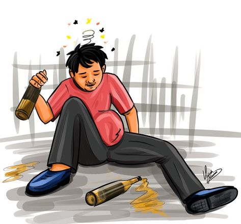
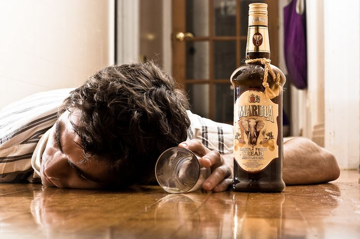
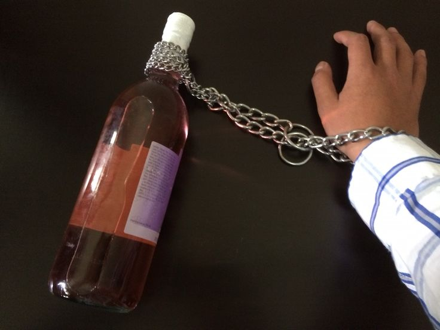
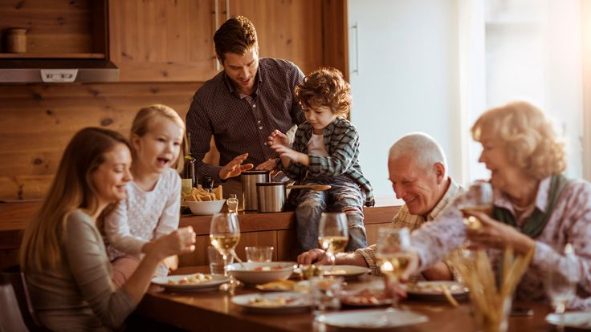

Pendahuluan
Salah satu tindakan penyimpangan yang dilakukan oleh remaja Indonesia adalah meminum-minuman beralkohol, sebagaimana kita ketahui minuman beralkohol atau minuman keras adalah minuman yang didalamnya mengandung ethanol. Ethanol sendiri merupakan bahan psikoaktif dan apabila dikonsumsi akan mengalami penurunan kesadaran bagi orang yang mengonsumsinya sehingga akan sulit mengendalikan diri, baik secara fisik, psikologis maupun sosial (Soekanto, 2006)
Akibat pergaulan bebas di era ini adalah terjadinya penyalahgunaan minuman keras. Penyalahgunaan minuman keras saat ini merupakan permasalahan yang cukup besar dan menunjukkan kecenderungan yang meningkat dari tahun ke tahun minuman keras ini bukan hanya yang bermerek atau pun yang sudah memiliki izin akan tetapi minuman keras oplosan pula yang paling mudah di jangkau terutama bagi para pelajar, hanya dengan mencampur campur segala macam minuman dan hasilnya dapat mengandung alcohol didalamnya Data Kepolisian di tahun 2018 telah menunjukan bahwa sebanyak 45 orang tewas di Kabupaten Bandung akibat kasus miras oplosan
Minuman keras atau alkohol semakin banyak dikonsumsi oleh kalangan remaja. Fenomena ini menjadi perhatian serius karena remaja adalah generasi penerus bangsa yang seharusnya tumbuh sehat dan produktif. Namun, kenyataannya, minuman keras sering dianggap sebagai simbol pergaulan bebas atau sekadar cara untuk bersenang-senang. Lalu, apa penyebabnya? Apa dampaknya? Dan bagaimana solusinya?
Penyebab Remaja Mengonsumsi Minuman Keras
faktor penyebab remaja melakukan tindakan kenakalan mengkonsumsi minuman keras terjadi karena dua faktor, yakni Faktor Internal dan Faktor Eksternal.
- Faktor Internal
- Faktor Eksternal
- Pengaruh Teman Sebaya
- Rasa Ingin Tahu
- Kurangnya Pengawasan Orang Tua
- Pengaruh Lingkungan
Lemahnya mengontrol diri sendiri oleh remaja menjadi pemicu untuk mengkonsumsi minuman keras (Azzahrah & Rozali, 2021). Kegiatan mengkonsumsi minuman keras karena faktor lemahnya pertahanan diri sendiri terjadi karena sudah terlalu sering mengkonsumsi minuman beralkohol tersebut sehingga membuat mereka ketagihan. Beberapa remaja yang ketagihan mengkonsumsi minuman keras biasanya tidak menunggu waktu berkumpul bersama teman untuk meminumnya. Mereka akan mengkonsumsi minuman keras sendiri jika terdapat waktu yang tepat dan uang yang cukup untuk membeli minuman keras tersebut.
Dengan lemahnya mengontrol diri juga bisa disebabkan sebagai pelarian dari tekanan hidup, seperti masalah keluarga, pergaulan, atau sekolah. Biasanya masalah ini dapat merambat dari pembullyan dan lain lain
Remaja cenderung mudah terpengaruh oleh teman sebaya. Jika teman-teman mereka minum alkohol, ada dorongan untuk ikut serta agar tidak merasa dikucilkan dan dijauhi oleh teman temannya.
Masa remaja adalah masa penuh rasa ingin tahu. Minuman keras dianggap sebagai sesuatu yang “menarik” untuk dicoba, terutama karena sering dilihat di media sosial, film, atau lingkungan sekitar.
Minimnya pengawasan dan komunikasi yang baik antara orang tua dan anak dapat membuat remaja mencari kebebasan.
Lingkungan masyarakat memengaruhi remaja dalam pergaulan dan lingkungan yang buruk yang terbiasa dengan minuman keras dapat memengaruhi remaja
Dampak Minuman Keras bagi Remaja
- Kerusakan Kesehatan
- Gangguan Mental
- Prestasi Menurun
- Perilaku Negatif
Alkohol dapat merusak organ tubuh seperti hati, jantung, dan otak. Pada remaja, efek ini bisa lebih parah karena tubuh mereka masih dalam masa pertumbuhan.
Konsumsi alkohol yang berlebihan bisa menyebabkan gangguan mental, seperti depresi dan kecemasan.
Remaja yang sering mengonsumsi minuman keras cenderung kehilangan fokus dalam belajar, sehingga prestasi akademik menurun.
Minuman keras sering kali memicu perilaku berisiko, seperti perkelahian, tindakan kriminal, hingga kecelakaan.
Solusi untuk Mengatasi Masalah Minuman Keras di Kalangan Remaja
- Peningkatan Peran Orang Tua
- Edukasi di Sekolah
- Kegiatan Positif untuk Remaja
- Penegakan Hukum yang Ketat
Orang tua harus lebih aktif dalam mengawasi dan berkomunikasi dengan anak. Berikan pengertian mengenai bahaya minuman keras sejak dini.
Sekolah dapat memberikan penyuluhan atau sosialisasi tentang dampak negatif alkohol agar remaja memahami risiko yang dihadapi, dengan dilakukannya sosialisasi di lingkungan sekolah dapat menumbuhkan kesadaran bagi remaja mengenai bahayanya minuman keras.
Arahkan remaja ke kegiatan yang positif seperti olahraga, seni, atau organisasi yang dapat mengembangkan bakat dan kreativitas mereka serta menyibuk kan diri dengan hal hal positif.
Pemerintah harus memastikan peredaran minuman keras tidak mudah dijangkau oleh remaja, serta memberikan sanksi bagi penjual yang melanggar aturan.
Penutup
Minuman keras di kalangan remaja adalah masalah yang perlu perhatian serius dari semua pihak. Penyebabnya bisa berasal dari lingkungan, pengaruh teman, atau kurangnya pengawasan. Dampak buruknya tidak hanya pada kesehatan, tetapi juga masa depan remaja itu sendiri. Dengan kerjasama antara keluarga, sekolah, dan masyarakat, kita bisa mencegah remaja terjerumus dalam kebiasaan buruk ini. Mari kita jaga generasi muda agar tumbuh menjadi pribadi yang sehat, kuat, dan berprestasi.